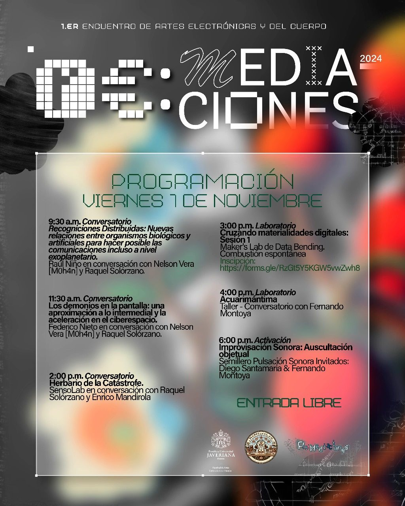
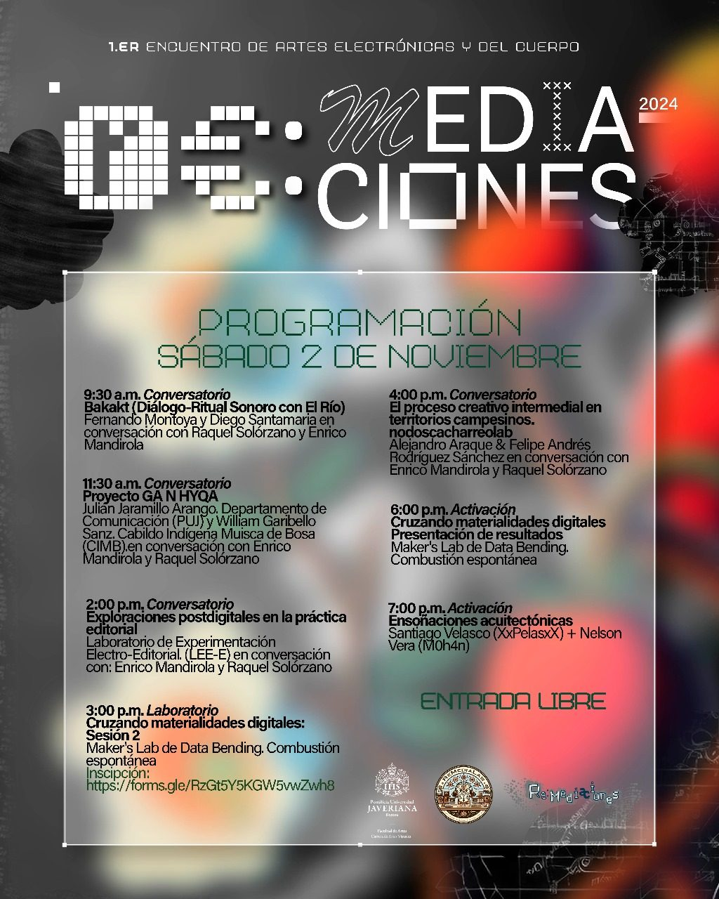
Todos los eventos se desarrollarán en la galería del edificio de la Facultad de Artes de la PUJ
Viernes 1 de noviembre
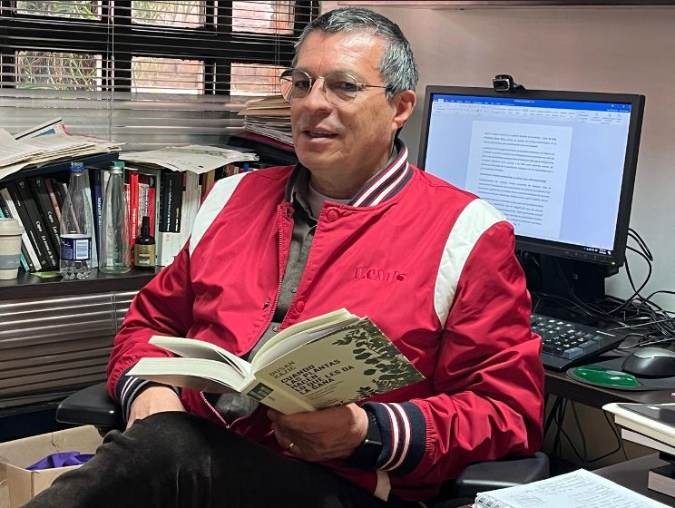
Invitado: Raúl Niño.
En conversación con:
Nelson Vera [M0h4n] y Raquel Solórzano.
9.30 a.m.
Recogniciones Distribuidas: Nuevas relaciones entre organismos biológicos y artificiales para hacer posible las comunicaciones incluso a nivel exoplanetario.
Restaurador de Obras de Arte, Diploma en Gerencia y Gestión Cultural, Magíster en Estudios Políticos, PhD en Ciencias Políticas.
Actualmente es director del Departamento de Estética en la Facultad de Arquitectura y Diseño. Es profesor e investigador del grupo: Estética, nuevas tecnologías y habitabilidad en categoría A-1 de MINCIENCIAS. En su trayectoria académica ha escrito varios artículos en revistas internacionales y entre sus publicaciones recientes en co-autoría se pueden destacar los siguientes títulos: Entornos posibles de la vida artificial cuántica. Estética posthumana: Interacción entre sistemas naturales y artificiales. Ecopolítica de los paisajes Artificiales. Conferencias internacionales en congresos de arte, ciencia y tecnología en los siguientes países: Brasil, Chile, Uruguay, Cuba, México, España, Francia. También ha sido profesor en universidades del Rosario, Universidad Jorge Tadeo Lozano, Universidad Nacional, entre otras.
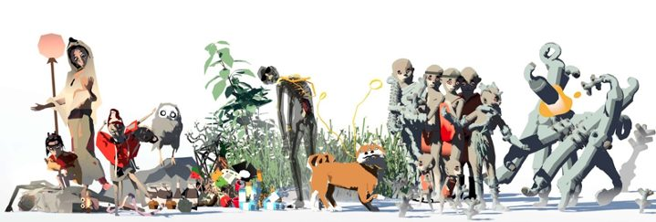
Invitado: Federico Nieto.
En conversación con:
Nelson Vera [M0h4n]
y Raquel Solórzano.
11:30 a.m.
Los demonios en la pantalla: una aproximación a lo intermedial y la aceleración en el ciberespacio.
En el recorrido que va desde el gnosticismo, con Pistis Sophia a las pantallas, encontramos que la idea del doble, de aquello que funciona como un intermediario en red con otras entidades (syzygy - daemon) se ha visto como la perversión de un original o de un modelo que permea y constituye la arquitectura del ciberespacio y lo virtual. Pero, ¿existe realmente un original? La corrupción del modelo, como potencia de lo intermedial, y las correspondientes fisuras demonológicas que se desprenden a partir de la repetición-diferenciación de la imagen, serán exploradas como una estrategia de aceleración especulativa-estética durante esta charla.
Federico Nieto: Investigador del programa de Filosofía Crítica de The New Centre For Research & Practice bajo la dirección de Reza Negarestani y magíster en filosofía de la Universidad Nacional de Colombia. Hace parte del colectivo de divulgación y la editorial [Otros Presentes]. Actualmente investiga sobre la crueldad como imperativo normativo subyacente a la cognición humana y artificial como crítica de las formas de vida, y la convergencia entre la filosofía de Nick Land y la filosofía de las ciencias.
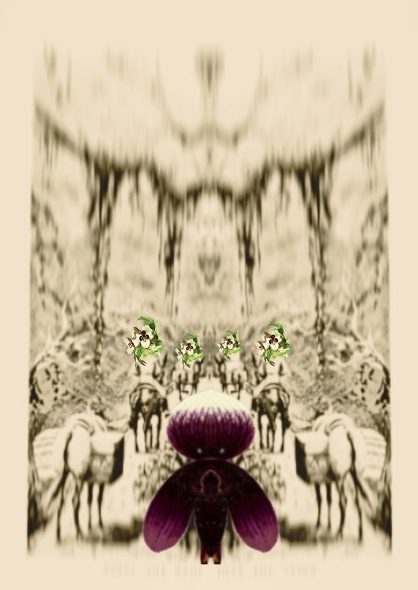
Invitado: Sensolab
En conversación con Raquel Solórzano y Enrico Mandirola
2 p.m.
Herbario de la Catástrofe.
Marta Cabrera (Directora del Departamento de Estudios Culturales); Óscar Guarín (Profesor del Departamento de Historia); Mariana Florian (Ecóloga y Archivista. Candidata a Doctora en Comunicación, Lenguajes e Información); Andrea Escobar (Profesora del Departamento de Psicología y estudiante del doctorado en Ciencias Sociales); Sara Osorio (Magistra en Historia y Maestra en Artes Visuales); Verónica Matalllana (Historiadora, Artista e Investigadora Independiente); Valentina Rodríguez (Maestría en Estudios Culturales Latinoamericanos); Daniel Ordoñez (Maestría en Estudios Culturales Latinoamericanos)
Esta conversación surge como parte de la reflexión iniciada por el Herbario de Chernobyl (Marder y Tondeur, 2016), una obra que explora las profundas huellas dejadas por el colapso nuclear en esa región. Los efectos de dicha catástrofe, aunque devastadores y evidentes en algunos aspectos, también se despliegan de forma sutil y persistente, afectando no solo a los seres humanos, sino también al entorno animal y vegetal.
Inspirados por esta noción de catástrofes de larga duración y consecuencias insospechadas, proponemos en esta ocasión un giro hacia otro tipo de catástrofe: el colonialismo. Aunque menos visible que el desastre nuclear, el colonialismo ha tenido un impacto igualmente devastador. Ha convertido a las plantas en mercancías, agotando los recursos naturales como la tierra, el agua y el aire, mientras deja cicatrices profundas en los cuerpos y territorios que habitan tanto humanos como no humanos.
Nuestro Herbario de la Catástrofe es un esfuerzo de capturar y archivar los efectos continuos y silenciados de este proceso. En este marco, la noción de "especimen" se vuelve central: una planta que, al ser preservada en una película o archivo, oscila entre lo vivo y lo no vivo, lo natural y lo artificial, revelando las contradicciones inherentes al acto de clasificar y observar. Como los fragmentos de plantas que conforman este herbario, cada especimen es testimonio de un ecosistema perdido, presente o por venir, y sirve como evidencia de los ciclos de explotación y transformación. El cine ha jugado un rol fundamental en generar las definiciones psico-sociales de especies, raza, identidad y cultura que siguen dando forma a los discursos científicos y políticos contemporáneos.
En el Herbario de la Catástrofe, lo que documentamos no es la urgencia de una catástrofe inmediata, sino la permanencia insidiosa de una muerte lenta y progresiva que se infiltra en el tejido mismo de la existencia, transformando lo natural en objeto de explotación bajo la lógica del progreso y la globalización.
SensoLab: laboratorio de experimentación de la Facultad de Ciencias Sociales, se presenta como un espacio donde la experimentación no solo es una metodología, sino también una forma de generar y repensar el conocimiento en las ciencias sociales. Como laboratorio, su principal objetivo es crear encuentros entre creadores y científicos de diversas áreas, promoviendo proyectos interdisciplinarios que reconfiguren las formas de enseñar, investigar y compartir ideas. Este enfoque se nutre de la experiencia del Grupo de Estudios Visuales de la Universidad Javeriana y la Universidad de los Andes, y de las múltiples colaboraciones entre sus integrantes. Además, SensoLab mantiene una estrecha relación con el Laboratório Antropológico de Grafía e Imagem (LA'GRIMA, Unicamp, Brasil), lo que amplía sus horizontes y refuerza su compromiso con el diálogo interdisciplinario.
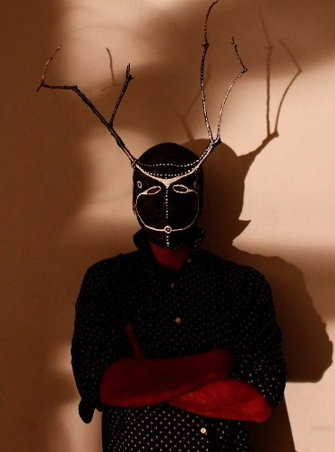
Taller - Conversatorio
con Fernando Montoya
4:00 p.m.
Acuarimántima
(se realizará 1 actividad de escritura creativa -manifiesto-, en torno a 1 texto corto y su interpretación).
“Acuarimántima; La palabra la inventó el poeta Porfirio Barba Jacob hace casi un siglo. Así llamó a la ciudad remota, soñada y ajena que él buscó toda su vida y jamás pudo hallar”. La pregunta, el caminar, la palabra, la deriva, nos conducen al fermento de nuestra imaginación, nos conducen también por caminos inesperados e imágenes inestables que solo se manifiestan y configuran con nuestra presencia y con ella, surge el relato y la palabra como dispositivo primigenio de comunicación, con la cual queremos contar acerca de esos caminos recorridos, en esa búsqueda de esa ciudad, de ese espacio, de ese estado y de esa belleza de la Acuarimántima.
Hoy la palabra es código void setup(){ que también nos comunica por medio de la tecnología ¿pero cual es su poética y como es su Acuarimántima? ¿tiene el mismo poder de hacer hechizos como la palabra antigua? ¿Cómo contamos nuestras travesías con esta palabra void loop(){?
En este conversatorio revisaremos a manera de “bisagra” como ha sido el tránsito desde las Artes Tradicionales Analógicas hacia las Artes Electrónicas, explorando obras propias y de otr@s artistas y revisando, más allá de categorías, sus pulsos narrativos.
El conversatorio inicia con una presentación (45-60 minutos) de ideas, conceptos, prácticas, piezas y obras de arte propias y de otr@s artistas, para dar inicio a una segunda parte, donde partiendo de un texto corto, se propone participar de un ejercicio de escritura creativa como activador de conversación abierta.
Fernando Montoya: Artista, Arquitecto, profesor y Maestrando en Artes Electrónicas UNTREF que busca combinar y experimentar conceptos del oficio arquitectónico y urbanístico, con dispositivos electrónicos-analógicos en dirección a la intervención del espacio, mediante maniobras y experiencias sonoras, con la utilización del Agua como Metáfora y Materia de trabajo. Actualmente desarrolla una Investigación y Obra llamada; Dislalia, (Hidrografías lingüísticas del Río Otún) donde se construye un lenguaje-Ficción, para comunicarse(nos) con el Río Otún (Colombia).
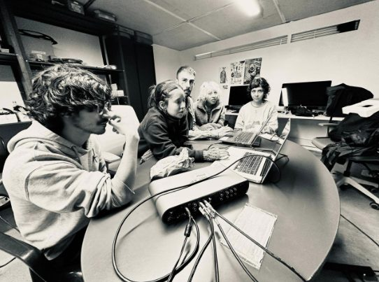
Improvisación Sonora: Auscultación objetual
realizada por el semillero Pulsación Sonora
Invitados: Diego Santamaria & Fernando Montoya
6:00 p.m.
Espacio de improvisación sonora en la que distintos objetos-materialidades interactuarán para co-crear un diálogo en el que se haga audible el sonido latente de cada uno de ellos, esto como un ejercicio acusmático en el que el sonido se comporta como una veladora para esculpir el espacio.
Pulsación Sonora es un semillero de la Facultad de Artes de la Pontificia Universidad Javeriana, integrado por un colectivo de artistas que exploran el sonido y sus posibilidades materiales desde la experimentación intuitiva, conceptual y técnica de toda la cadena del fenómeno sonoro. Entendemos el sonido como una corporalidad con la capacidad de esculpir espacios y cuerpos a través de su resonancia.
Sábado 2 de noviembre
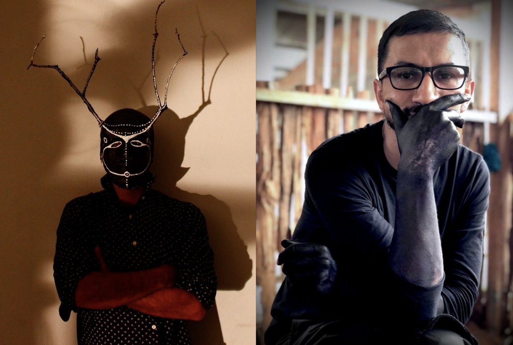
Invitados: Fernando Montoya y Diego Santamaria.
En conversación con Raquel Solórzano y Enrico Mandirola
9:30 a.m.
Bakakɨ (Diálogo-Ritual Sonoro con El Río)
Maniobra Sonora.
(Ejercicio colectivo de palabra e improvisación sonora -se requiere que los participantes lleven 1 objeto de sus apegos-).
¿Cómo comunicarse con lo no humano para validar estas prácticas otras del lenguaje como dispositivos de resistencia y mediación entre los conflictos actuales por el agua? En línea y hacia la comunicación con la no-humano, proponemos un ejercicio performático-sonoro y colectivo (maniobra sonora), que aborda la temática del Río Sujeto de Derechos y que acoge a varios ríos de Colombia para reflexionar, ficcionar y/o establecer, un lenguaje electrónico-sonoro-expandido, para comunicarse con El Río.
Mediante expresiones personales, sonoras, corporales y colectivas, reconstruiremos los componentes fundamentales de este ecosistema, para brindar una suerte de “rostro” que nos permita significar y comunicar con la otredad, con los espíritus del monte, con espíritus ordenadores de su cosmovisión o los animales de sus contextos y, en este caso, del río y del ecosistema que le compone.
Diego Santamaria: se considera un trashumante sonoro. Ha dedicado gran parte de su vida a procesos de formación, creación e investigación de procesos ligados a la radio, el sonido y al arte sonoro como materialidades desde las cuales se logran reflexiones y transformaciones significativas en comunidades indígenas, campesinas, organizaciones comunitarias y grupos artísticos entre otros.
En la actualidad se desempeña como docente y coordinador de la Tecnología en Realización Audiovisual y el Técnico Profesional en Producción de Sonido en Vivo y Audiovisual en la Facultad de Ciencias de la Comunicación en UNIMINUTO - Bogotá.
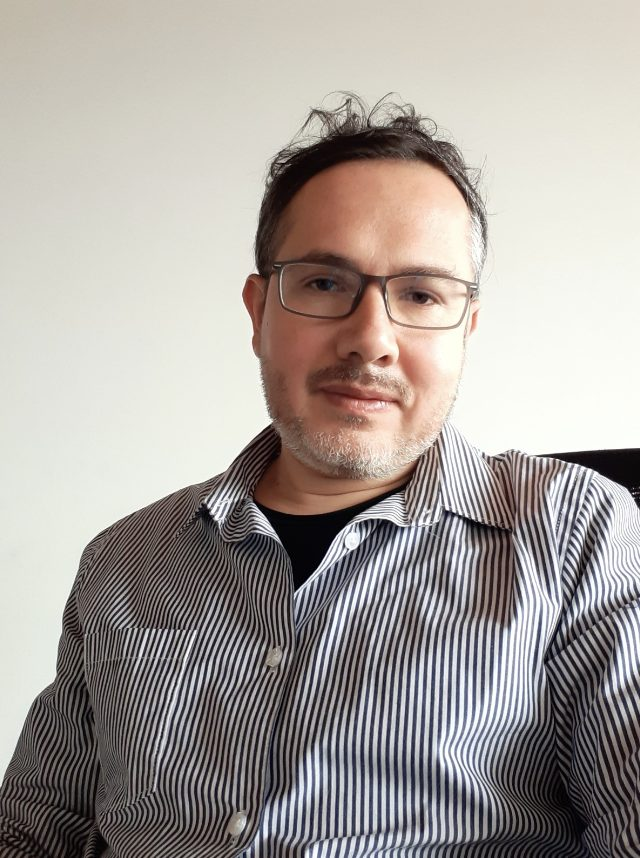
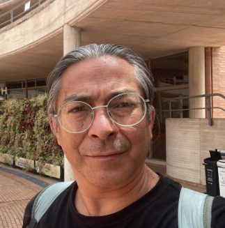
Invitados: Julián Jaramillo Arango. Departamento de Comunicación (PUJ) y William Garibello Sanz. Cabildo Indígena Muisca de Bosa (CIMB).
En conversación con: Enrico Mandirola y Raquel Solórzano
11:30 a.m.
Proyecto GA N HYQA
El proyecto GA N HYQA se adelanta a partir de una perspectiva encarnada y activista desde el proceso comunitario de las seis comunidades reconocidas por el Ministerio del Interior, desde metodologías de cocreación, producción colectiva en la investigación • creación, así como un proceso de autoetnografía multimodal que alimenta la producción de conocimientos y profundización de la identidad Mhuysqa en múltiples niveles. Uno de los valores de esta investigación es poner la voz del pueblo Mhuysqa en los estudios que, sobre su territorio ancestral, manifestaciones culturales y espirituales se ha dado sin su participación como autores. Otro valor es la suma que como pueblo Mhuysqa han hecho las seis comunidades para el trabajo espiritual y material con la pictografía. Es de destacar también el interés en ahondar y hacer conscientes los saberes y prácticas propias para investigar haciendo unidad con sabedorxs, médicxs, parteras y mayores. También hacen parte del equipo sabios de otros pueblos aborígenes hermanos y académicos dedicados al estudio del arte rupestre, de la lengua, el tejido, la arqueoastronomía, etc. La investigación tiene dos ejes fundamentales: las hyqa (piedra) y las pictografías. Las hyqa tienen agencia y desde la medicina ancestral y la partería son abuelxs que pueden ayudar a sanar física y espiritualmente. A la vez que son archivo en piedra de la memoria e historias de origen del territorio y sus gentes con las pictografías y petroglifos. Las sunas (visitas) de reconocimiento del territorio buscan acercarse al tejido y conexiones del territorio, a reconocer piedras de medicina, de saberes, de animales. Las hyqa también dialogan con el abos (cosmos) y la zhona (bóveda celeste) siguen su orden en los ciclos solares y lunares. De acercarse a sentir y comprender ese lenguaje dejado en hyqa se trata este proyecto de investigación - creación.

Invitado: Laboratorio de Experimentación Electro-Editorial. (LEE-E).
En conversación con: Enrico Mandirola y Raquel Solórzano
2:00 p.m.
Exploraciones postdigitales en la práctica editorial
Guioné (-E) es una publicación experimental que pretende investigar a través de la creación editorial formas de producción electro-digitales desde las que pueda resignificarse el diálogo entre la pantalla y el papel. Bajo una perspectiva creativa postdigital y el espíritu productivo del libro arte, propone la exploración conceptual de formas de publicación que den sentido a los medios digitales y analógicos como posibilidades complementarias, mas no antagónicas, de producción editorial. -E es la publicación que se utiliza como espécimen/matriz/prototipo/paradigma de estudio en el Laboratorio de Experimentación Electro-Editorial (LEE-E). Plantea cuestionarse sobre sí misma como objeto a través de la experimentación en la publicación de contenidos, reflexionando críticamente, desde el hacer artístico, sobre la condición electro-digital que elabora como productor, contenedor y difusor de información. -E es un concepto que pretende trascender las nociones convencionales de publicación editorial fundamentadas en la materialidad del impreso y su remediación digital, para elaborar nuevas propuestas en torno a las aptitudes que otorga la pantalla electrónica en la producción de contenidos y su diálogo con el papel. -E pretende ser un índice de alternativas para la publicación editorial desde búsquedas que construyan significado en la expresión y comunicación de ideas a través de relaciones conceptuales entre contenedor y contenido.
Dentro de esta charla, se incorpora también el concepto de "Libro de visita" que el laboratorio está elaborando, para el encuentro.
El laboratorio LEE-E pretende ser un espacio interdisciplinar de experimentación que explore formas alternas de publicación enmarcadas en el ámbito editorial. Se propone un escenario postdigital de investigación, creación y producción que responda y dé solución a las necesidades y dificultades que actualmente conlleva la publicación de contenidos, principalmente, aquellos que son condicionados por las limitaciones convencionales del impreso. Busca por lo tanto indagar formas de creación editorial que hallen alternativas en la pantalla y resignifiquen el valor material de su producción en el papel, partiendo de una postura crítica que cuestiona conceptos de publicación editorial mediante la utilización de tecnologías digitales y analógicas en las que se incorpora la creación artística como mecanismo para la transmisión de conocimiento.
Los participantes actuales son: Clara Unigarro, Isabella Betancourt, Esteban Millán, Ronald Meléndez, Taller de grabado
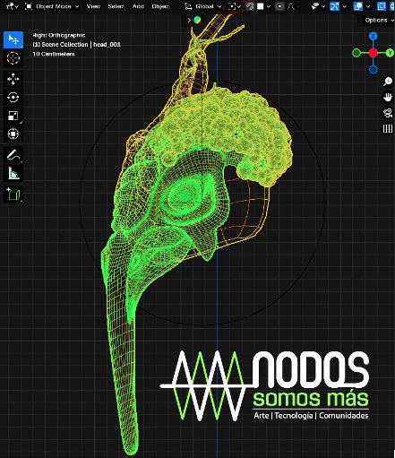
Invitados: Alejandro Araque & Felipe Andrés Rodríguez Sánchez
En conversación con: Enrico Mandirola y Raquel Solórzano
4:00 p.m.
El proceso creativo intermedial en territorios campesinos. nodoscacharreolab:
La creación intermedial implica la convergencia de diversos medios y disciplinas, donde las fronteras entre lo visual, lo sonoro, lo textual y lo performativo se desdibujan para generar nuevas formas de experiencia estética y social. En el contexto de los territorios campesinos, este enfoque se torna especialmente relevante, ya que permite un acercamiento crítico a la comprensión de los saberes y prácticas locales, resignificando la representación tradicional del campesinado desde una perspectiva poética y visual. Esta reflexión tiene como base la necesidad de superar las narrativas hegemónicas que suelen reducir al campesino a un símbolo de atraso o marginalidad, proponiendo en cambio una visión que reivindica su protagonismo en la construcción de conocimiento y cultura.
Desde el punto de vista creativo, el proceso se convierte en una herramienta para explorar la riqueza del territorio campesino no solo como un espacio físico, sino como un campo simbólico lleno de historias, memorias y luchas. La construcción de experiencias intermediales en este contexto fomenta una interacción dinámica entre los actores sociales, los materiales del entorno y las tecnologías contemporáneas, integrando múltiples medios y lenguajes en un acto de co-creación comunitaria. A través de este proceso, se genera un conocimiento expandido que no se limita a lo racional o académico, sino que abarca lo sensorial, lo emocional y lo simbólico, permitiendo una comprensión más profunda y poética de las realidades rurales.
La intermedialidad se entiende aquí como una metodología de investigación-acción participativa (IAP), donde la práctica artística se articula con la construcción social del territorio. En este sentido, los dispositivos como el espantapájaros, la cartografía crítica o los laboratorios de paisaje sonoro se constituyen como herramientas que visibilizan las relaciones entre el ser humano y su entorno. Estas prácticas artísticas, al estar imbuidas en el proceso de creación colectiva, permiten repensar los modos en que se habita y se transforma el territorio. Los relatos visuales y orales que acompañan la construcción de estos dispositivos no solo reflejan el pasado y presente campesino, sino que también proyectan futuros posibles, en los que las tecnologías locales y los saberes ancestrales dialogan con las innovaciones contemporáneas para construir nuevas narrativas de resistencia y creatividad.
La importancia de estos acercamientos radica en su capacidad para cuestionar las representaciones estandarizadas y descolonizar las imágenes asociadas a los territorios campesinos. En lugar de perpetuar los estereotipos impuestos por los medios hegemónicos, se plantea una revalorización crítica del campesinado como sujeto activo en la construcción de su entorno y de su propia imagen. A través de la intermedialidad, se reconfiguran los modos en que el territorio es experimentado, representado y comprendido, promoviendo una relación más estrecha entre el arte y la vida cotidiana.
Este enfoque intermedial también tiene una dimensión poética que es fundamental para la comprensión del proceso creativo. La poesía, en este sentido, no se refiere únicamente a lo literario, sino a una sensibilidad estética que permite captar las sutilezas y complejidades del territorio rural. Las artes visuales juegan un papel crucial en este proceso, ya que a través de ellas se puede transformar la percepción del paisaje campesino, integrando elementos visuales, sonoros y sensoriales en una experiencia inmersiva que conecta al espectador con el entorno de una manera más profunda y reflexiva. Los laboratorios de paisaje sonoro, por ejemplo, no solo registran los sonidos de la molienda de caña o el viento en los campos, sino que también invitan a una meditación sobre el tiempo, la memoria y la pertenencia, aspectos centrales en la vida campesina.
La creación de experiencias intermediales en territorios campesinos plantea preguntas sobre el rol del arte en la transformación social. Al combinar saberes locales con modos contemporáneos de representación, se abre un espacio para la innovación creativa que, al mismo tiempo, es profundamente respetuosa con las tradiciones y prácticas culturales existentes. Este proceso permite que los actores locales se apropien de las herramientas de creación y representación, generando una narrativa propia que contribuye al empoderamiento comunitario y a la preservación del territorio frente a las amenazas del desplazamiento y la modernización desmedida.
Estas interacciones permiten una plataforma crítica y poética para el diálogo entre las artes visuales y los territorios campesinos. A través de la intersección de medios y disciplinas, se promueve una comprensión expandida y sensorial del territorio, al mismo tiempo que se cuestionan las representaciones tradicionales del campesinado. Este enfoque no solo resalta la riqueza cultural de las comunidades rurales, sino que también contribuye a la creación de nuevas formas de conocimiento que integran lo estético, lo social y lo político en una propuesta de resistencia y revitalización territorial.
Trabajo de campo:
Festival de los Espantapájaros, las Mieles y los Guarapos organizado por la Asociación Campesina Ecovaral (Macanal, Boyacá).
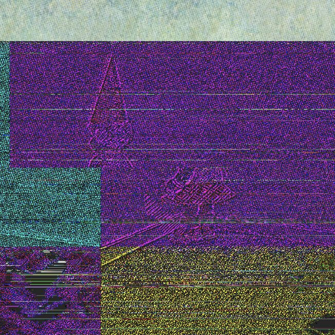
Presentación de resultados: Maker's Lab
Data Bending. Cruzando materialidades digitales
6:00 p.m.
Este evento presentará una instalación/ensamble colectivo donde los participantes explorarán las conexiones entre el sonido y la imagen a través de la manipulación de datos digitales. A partir de la reinterpretación de ondas electromagnéticas y vibraciones, se han generado experiencias sensoriales que desafían nuestra percepción del universo, utilizando herramientas digitales para convertir lo abstracto en paisajes sonoros y visuales.
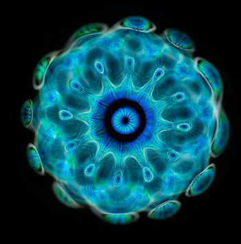
Performance instalativa A/V "Ensoñaciones acuitectónicas". Por Santiago Velasco (XxPelasxX) + Nelson Vera (M0h4n).
7.00 p.m.
«Ensoñaciones acuitectónicas» es una performance audiovisual, con diversos elementos instalativos en escena, alrededor de la relación “rituales-espacio-agua-vibraciones-y-sueños”, nutrida de la investigación-creación del trabajo de grado del artista-estudiante Santiago Velasco (XxPelasxX), en re-sonancia y co-autoría/complicidad con el docente y artista-formador del departamento de Artes Visuales, Nelson Vera (M0h4n). Esta Performance propone un ritual de hibridación y tejido entre sueños —entendidos éstos como un software generativo desde el inconsciente planetario— y el agua —como el hardware líquido constitutivo de los cuerpos y de la Tierra—; una experiencia ritual y estética que explora el continuo entre lo vivo y lo no vivo, a partir de la interseccionalidad de procesos oníricos e hídricos, de la mano de tradiciones místicas y de especulaciones algorítmicas.
Santiago Velasco (XxPelasxX)
Artista audiovisual de la universidad javeriana. Explora, disfruta, descansa y se retroalimenta en la práctica de generación de imágenes y visuales en vivo a través de la programación, conocida como Live Coding. Entusiasta de la creación transdisciplinaria que busca explorar y generar amalgamas desde una disposición hacia lo textual y textural de los lenguajes plásticos, matéricos, sonoros, musicales y de programación, que al ser digitados y/o digitalizados se transmutan, reiteran y reinterpretan. Entiende el código como una agencia/herramienta creativa que desde un gesto escritural puede generar poéticas <<transmatéricas>> y narrativas audiovisuales expandidas (Expanded LiveCinema) enmarcadas en un pensamiento algorítmico flexible, posibilitando así, experiencias estéticas que dibujan, desdibujan y redibujan, desde el código y su ejecución en vivo, resonancias y cuestionamientos a los cuerpos (humanos y no humanos) a través de sensaciones, intuiciones, preguntas, reflexiones y movimientos, con relación a los contextos históricos y culturales que experimentamos y creamos desde lo colectivo.
Ha participado en eventos internacionales de Livecoding como <<Toplap solstice stream 2023>> y el <<Toplap 20th anniversary>>.
Nelson Vera (M0h4n)
Creador Audiovisual con Nuevos y Diversos Medios, Escritor y Músico colombiano. M.A. en Sonología de la Universitat Pompeu Fabra y el Conservatorio ESMUC de Barcelona, y M.A. en Antropología de la Universidad de los Andes de Bogotá. Investigador-creador, artista-formador y docente universitario en distintivas instituciones académicas colombianas, como la Universidad Javeriana y la Universidad de los Andes, y en otros espacios (no) institucionales, en áreas de vanguardia y de experimentación en la Creación Audiovisual, Artes Visuales, Artes Electrónicas e Intermedia, Escrituras Creativas, Artes Sonoras y Musicales, Teorías Contemporáneas, Narrativas Multimedia Interactivas y Digitales en Web. Fundador, co-creador y guía de viaje, alrededor de Contenidos Narrativos Transmediales y Experiencias Artísticas con Nuevos Medios, con su nodo-colectivo 4L3PH “Creatividad y Futuro(s)” www.4L3PH.com .